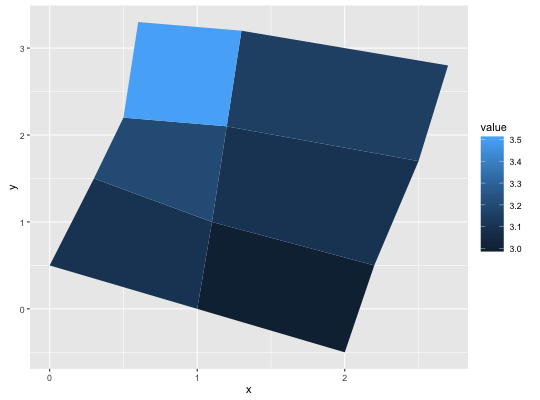
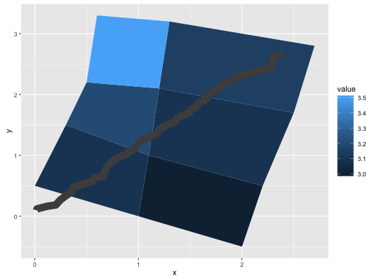

geom_polygon(mapping = NULL, data = NULL, stat = "identity", position = "identity", show.legend = NA, inherit.aes = TRUE, ...)
aes or
aes_. If specified and inherit.aes = TRUE (the
default), is combined with the default mapping at the top level of the
plot. You only need to supply mapping if there isn't a mapping
defined for the plot.NA, the default, includes if any aesthetics are mapped.
FALSE never includes, and TRUE always includes.FALSE, overrides the default aesthetics,
rather than combining with them. This is most useful for helper functions
that define both data and aesthetics and shouldn't inherit behaviour from
the default plot specification, e.g. borders.layer. There are
three types of arguments you can use here:
color = "red" or size = 3.
stat associated with the layer.
Polygon, a filled path.
geom_polygon understands the following aesthetics (required aesthetics are in bold):
x
y
alpha
colour
fill
linetype
size
# When using geom_polygon, you will typically need two data frames: # one contains the coordinates of each polygon (positions), and the # other the values associated with each polygon (values). An id # variable links the two together ids <- factor(c("1.1", "2.1", "1.2", "2.2", "1.3", "2.3")) values <- data.frame( id = ids, value = c(3, 3.1, 3.1, 3.2, 3.15, 3.5) ) positions <- data.frame( id = rep(ids, each = 4), x = c(2, 1, 1.1, 2.2, 1, 0, 0.3, 1.1, 2.2, 1.1, 1.2, 2.5, 1.1, 0.3, 0.5, 1.2, 2.5, 1.2, 1.3, 2.7, 1.2, 0.5, 0.6, 1.3), y = c(-0.5, 0, 1, 0.5, 0, 0.5, 1.5, 1, 0.5, 1, 2.1, 1.7, 1, 1.5, 2.2, 2.1, 1.7, 2.1, 3.2, 2.8, 2.1, 2.2, 3.3, 3.2) ) # Currently we need to manually merge the two together datapoly <- merge(values, positions, by=c("id")) (p <- ggplot(datapoly, aes(x=x, y=y)) + geom_polygon(aes(fill=value, group=id)))
# Which seems like a lot of work, but then it's easy to add on # other features in this coordinate system, e.g.: stream <- data.frame( x = cumsum(runif(50, max = 0.1)), y = cumsum(runif(50,max = 0.1)) ) p + geom_line(data = stream, colour="grey30", size = 5)
# And if the positions are in longitude and latitude, you can use # coord_map to produce different map projections.